USB 协议简介
[toc]
一、USB 架构
系统中只能有一个主机，并且与设备进行的通信是从主机的角度进行的。主机是“上行”组件，设备则是“下行”组件，如下图表示。数据从主机转移到外设的操作是 OUT 传输。数据从外设转移到主机的操作是IN 传输。主机（尤其是主控制器）控制着所有通信并向设备发出指令。共有三种常见的 USB 主控制器：
- 通用主控制器接口（
UHCI）：由 Intel 生产，适用于 USB 1.0 和 USB 1.1。使用UHCI 时需要得到 Intel 的许可。该控制器支持低速模式和全速模式。 - 开放主控制器接口（
OHCI）：由 Compaq、Microsoft 和 National Semiconductor 生产，适用于 USB 1.0 和 1.1。该控制器支持低速模式和全速模式，并且它的效率比 UHCI 更高，因为可以执行更多硬件功能。 - 扩展型主控制器接口（
EHCI）：在 USB-IF 要求发布单一主控制器规范后，已经生产了该控制器，它适用于 USB 2.0。EHCI 仅支持高速传输，并且将低速和全速传输委托给 OHCI 或 UHCI 控制器执行。
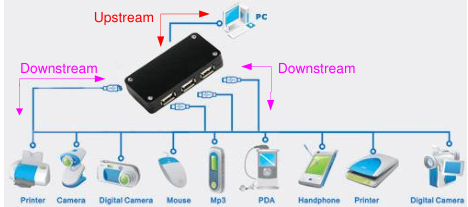
通过使用集线器最多能够将 127 个设备连接至主控制器上。连接设备的数目限制由 USB 协议决定，它限制设备地址为 7 位。另外，由于集线器的时间限制和电缆传播的延迟，因此最多只能将五个集线器链接在一起。下图显示的是 USB 层次系统的框图，它表示集线器和设备的链接限制。您可以看到，随着集线器的链接限制，层次系统也限制为七层。
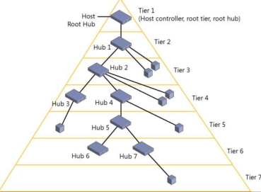
二、物理特性
1、USB 接口
一条 USB 传输线分别由地线、电源线、D+ 和 D- 四条线构成，D+ 和 D- 是差分输入线，它使用的是 3.3V 的电压（与 CMOS 的 5V 电平不同），而电源线和地线可向设备提供 5V 电压，最大电流为 500mA（可以在编程中设置）。
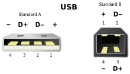
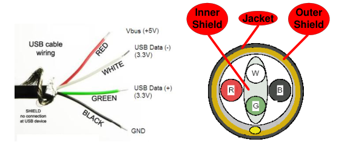
USB 设备可以直接和 HOST 通信，或者通过 Hub 和 Host 通信。一个 USB 系统中仅有一个 USB 主机，设备包括 USB 功能设备和 USB HUB，最多支持 127 个设备。物理连接指的是 USB 传输线。在 USB2.0 系统中要求使用屏蔽双绞线。
在全速和高速设备内，最大线缆长度为 5m。要想增大主机和设备间的距离，您必须使用一系列集线器和 5m 长的线缆。市场上存在多种 USB 扩展线缆，但使用超过 5m 的线缆违反了 USB 规范。低速设备的规范不太一样。它们的线缆长度被限制为 3m，并且不需要使用双绞线。
上行连接始终使用 Type A 型端口和连接器，而设备使用 Type B 型端口和连接器。最初，USB 规范仅包含用于设备的更大的 Type A 型和 Type B 型连接器，后来提供了 Mini 和 Micro 连接器。这些 Mini 和 Micro 连接器最初是为 USB On-the-Go （USB OTG）开发的。USB OTG 是一个 USB 规范，允许将通常作为从设备的设备作为主机使用。
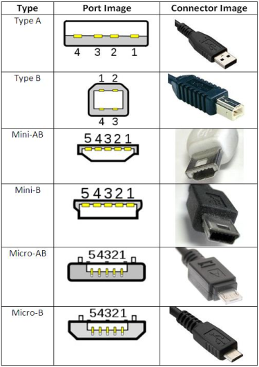
Mini 和 Micro 连接器具有五个（而不是 4 个）引脚。额外引脚是 ID 引脚，用于识别OTG 应用中的主机和设备。
USB 标准的连接器引脚分布：
| 引脚标号 | 信号名称 | 缆线颜色 | 功能 |
|---|---|---|---|
| 1 | VCC | 红 | +5V |
| 2 | Data-（D-） | 白 | 数据- |
| 3 | Data（D+） | 绿 | 数据+ |
| 4 | GND | 黑 | 接地 |
USB Mini/Micro 连接器引脚分布
| 引脚标号 | 信号名称 | 缆线颜色 | 功能 |
|---|---|---|---|
| 1 | VCC | 红 | +5V |
| 2 | Data-（D-） | 白 | 数据- |
| 3 | Data（D+） | 绿 | 数据+ |
| 4 | ID | NA | 识别 Type A 型和 Type B 型插座： A 插座：连接到接地信号 B 插座：未连接 |
| 5 | GND | 黑 | 接地 |
2、USB 信号
USB 使用差分信号进行数据传输，这样可以有效的降低外接带来的干扰。
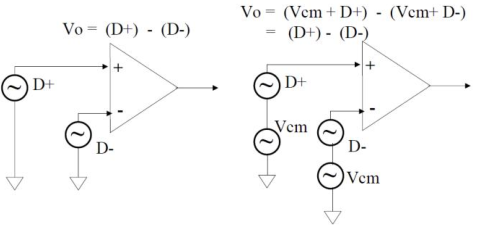
下表是 USB 通信的状态：
| 总线状态 | 指示 |
|---|---|
| 差分1 | D+ 为高电平，D- 为低电平 |
| 差分0 | D+ 为低电平，D- 为高电平 |
| 单端0（SE0） | D+ 和 D- 为低电平 |
| 单端1（SE1） | D+ 和 D- 为高电平 |
| 恢复状态 | K 状态 |
| 数据包开始（SOP） | 数据线从闲置状态切换到 K 状态 |
| 数据包结束（EOP） | SE0 持续两位时间以及 J 状态持续 1 位时间 |
| 总线状态 | 指示 | |
|---|---|---|
| J 状态 | 低速 | 差分0 |
| 全速 | 差分1 | |
| 高速 | 差分1 | |
| K 状态 | 低速 | 差分1 |
| 全速 | 差分0 | |
| 高速 | 差分0 |
- 差分 0 和差分 1：这两个状态用于通过 USB 进行的通用数据通信。当 D+ 线为高电平、D- 线为低电平时，该状态为差分 1。当 D+ 线为低电平、D- 线为高电平时，该状态为差分 0
- J 状态和 K 状态：除了差分信号外，USB 规范还定义了其他两个差分状态：J 状态和K 状态。它们的定义由设备速度决定。
- 在全速和高速设备上，J 状态为差分 1 而 K 状态是差分 0
- 在低速设备上，该情况则相反
- 单端0（
SE0）：在 D+ 和 D- 均为低电平时所发生的状态。该状态表示一个复位、断连或数据包的结束。 - 单端1（
SE1）：在 D+ 和 D- 均为高电平时发生的状态。不会故意生成该状态，并且不能在 USB 设计中出现。 - 闲置：必须在发送一个数据包的前后发生的状态。如果一个数据线为低电平，而另一个数据线为高电平，则表示闲置状态。高电平和低电平的定义由设备的速度决定。
- 在全速设备上，闲置状态是指 D+ 为高电平、D- 为低电平
- 在低速设备上，该情况则相反
- 恢复：用于使设备从挂起状态唤醒。通过发送一个K 状态实现该操作
- 数据包的开始（
SOP）：当 D+ 和 D- 线从闲置状态转换到K 状态时，将在开始低速或全速数据包前发生 - 数据包的结束（
EOP）：在低速或全速数据包结束时发生。当 SE0 状态持续两位时间（后面的内容将介绍位时间）以及 J 状态持续 1 位时间时，将发生 EOP - 复位：在 SE0 状态持续 10 ms 时发生。在 SE0 至少持续 2.5 ms 后，该设备会复位，并开始进入复位状态
- 保持活动（
Keep Alive）：在低速设备中使用的信号。低速设备缺少了一个帧起始数据包（用于防止挂起状态）。每次经过 1ms，它们都会使用一个 EOP 来防止设备进入挂起状态。
3、USB 字节序
先发 LSB，在发 MSB。
4、USB 信号的编码
USB 中的数据采用反向不归零编码方式（NRZI：none-return to zero inverted），并对 D+ 和 D- 线所处的不同状态定义成 J 和 K 两种状态。
| 数据状态 | D+ | D- |
|---|---|---|
| 低速 J 状态 | 0 | 1 |
| 低速 K 状态 | 1 | 0 |
数据的编码/解码（反向不归零码）：
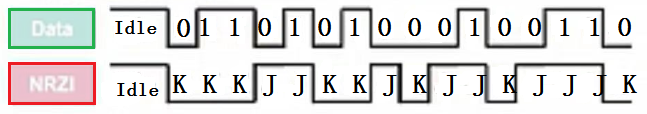
注：
- 遇到 0 的边沿进行状态改变，如果是 1 保持原有状态
- 在数据进行 NRZI 编码前，每 6 个连续的 1 信号之后都会插入一个 0 信号，以免丢失同步
反向不归零编码方式可以保证数据的完整性，而且不要求传输过程中由独立的时钟信号。
5、USB 设备检测
USB1.0 和 USB1.1 支持 1.5Mb/s 的低速模式（Low Speed）和 12Mb/bs 的全速模式（Full Speed）。在 USB2.0 以上支持 480Mb/s 的高速模式（High Speed）。
USB 低速模式是在 D- 线上上拉 1.5K 的电阻。
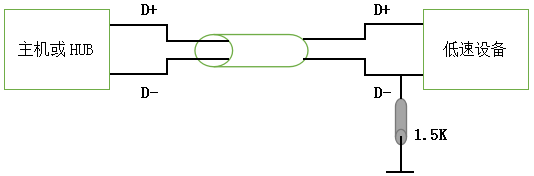
USB 全速模式是在 D+ 线上上拉 1.5K 的电阻。
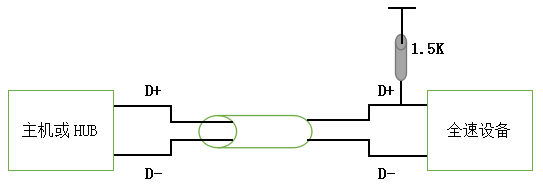
当 USB 设备接入系统时刻，系统通过检测 USB 上的 D+ 或者 D- 线上的上拉电阻的方式来识别低速和全速设备。如上图所示，当主机端没有设备接入的时候，其 D+ 和 D- 的下拉电阻使得其电压几乎为 0V；当全速/低速设备接入后，在 D+/D- 端的上拉电阻会使得 D+/D- 出现高电平，而另外一根是低电平。主机端便知道有设备插入。
对于高速设备，和全速设备一样，在 D+ 上存在上拉电阻。对于高速设备的的识别，主机先把高速设备检测为全速设备，然后再通过“Chirp 序列”的总线握手机制来识别高速和全速设备。
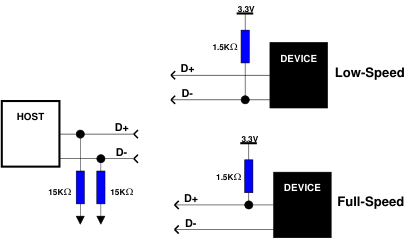
6、USB 速度
USB 规范已经为 USB 系统定义了以下四种速度模式：低速（Low-Speed）、全速（Full-Speed）、高速（Hi-Speed）和超高速（Super-Speed）。
新型主机一直能同低速设备进行通信。例如，高速主机能够与低速设备进行通信，但全速主机并不能同高速设备进行通信。
低速、全速和高速设备的速率分别为 1.5 Mb/s、12 Mb/s 和 480 Mb/s。但是，这些指的是总线速率，并不是数据速率。实际的数据速率受总线加载速度、传输类型、开销、操作系统等因素的影响。数据传输则受以下内容的限制：
- 低速设备
- 例如：键盘、鼠标和游戏等外设
- 总线速率：1.5 Mb/s
- 最大的有效数据速率：800 B/s
- 全速设备
- 例如：手机、音频设备和压缩视频
- 总线速率：12 Mb/s
- 最大的有效数据速率：1.2 MB/s
- 高速设备
- 例如：视频、影像和存储设备
- 总线速率：480 Mb/s
- 最大的有效数据速率：53 MB/s
这些速度也影响到有关位时间的 USB 信号（如数据包结束（EOP）信号）。低速和全速USB 设备使用了频率为 48 MHz 的时钟执行 SIE 操作，并执行使用其他时钟源的USB 操作。该 48 MHz 时钟和总线速度决定了 USB 位时间：
- 全速：时钟频率/总线速度 = 48 MHz / 12 Mb/s 时，USB 位时间为 4 个时钟周期。
- 低速：时钟频率/总线速度 = 48 MHz / 1.5 Mb/s 时，USB 位时间为 32 个时钟周期。
7、USB端口颜色编码标识
USB 端口和连接器有时会进行颜色编码，以指示其支持的 USB 规范和功能。这些颜色不是 USB 规范所要求的，设备制造商之间也不一致。例如，Intel 使用橙色表示充电端口，而一家工业设备组件制造商选择橙色表示具有强保留机制的 USB 端口。
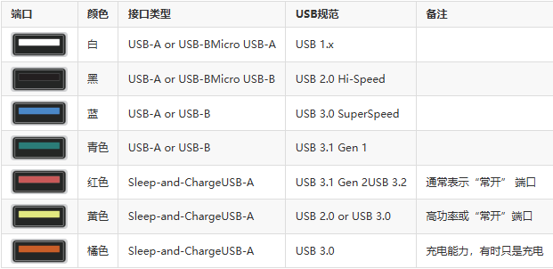
三、通信协议
USB 数据是由二进制数字串构成的：
- 首先数字串构成域（七种）
- 域再构成包（令牌包、数据包、握手包）
- 包再构成事务（IN、OUT、SETUP）
- 事务最后构成传输（中断传输、同步传输、批量传输和控制传输）。
1、域
域是 USB 数据最小的单位，由若干位组成，域可分为七种类型：
- 同步域（
SYNC），8位，值固定为 $0000 0001$，用于本地时钟与输入同步，标志一个包的起始。 - 标识域（
PID），由四位标识符+四位标识符反码构成，表明包的类型和格式，可以计算出 USB 的标识码有 16 种。 - 地址域（
ADDR）：七位地址，代表了设备在主机上的地址，地址 $000 0000$ 被命名为零地址，是任何一个设备第一次连接到主机时，在被主机配置、枚举前的默认地址，因此一个 USB 主机只能接 127 个设备。 - 端点域（
ENDP），4位，由此可知一个 USB 设备有的端点数量最大为 16 个。 - 帧号域（
FRAM），11位，每一个帧都有一个特定的帧号，帧号域最大容量为 $0x800$，帧号连续增加，到 $0x7ff$ 后自动从 0 开始，对于同步传输有重要意义。 - 数据域（
DATA）：长度为 0~1023 字节，在不同的传输类型中，数据域的长度各不相同，但必须为整数个字节的长度 - 校验域（
CRC）：对令牌包（CRC5）和数据包（CRC16）中非PID域进行校验的一种方法，CRC校验在通讯中应用很泛，是一种很好的校验方法，至于具体的校验方法请查阅相关资料，只须注意CRC码的除法是模 2 运算，不同于 10 进制中的除法。
2 、包
包（Packet）是 USB 系统中信息传输的基本单元，所有数据都是经过打包后在总线上传输的。数据在 USB 总线上的传输以包为单位，包只能在帧内传输。
高速 USB 总线的帧周期为 125us，全速以及低速 USB 总线的帧周期为 1ms。
帧的起始由一个特定的包（SOF 包）表示，帧尾为 EOF。EOF 不是一个包，而是一种电平状态，EOF 期间不允许有数据传输。
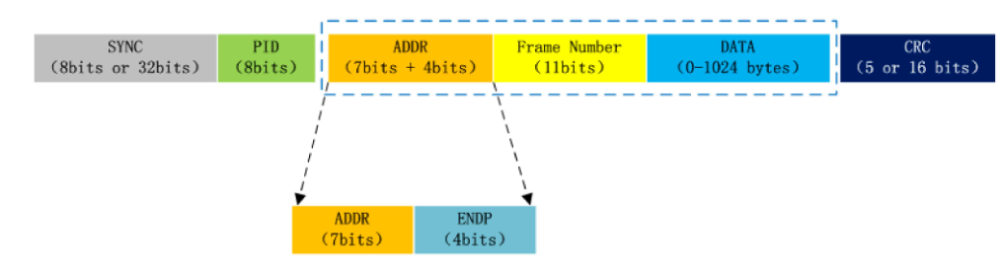
其中，不同的 PID 标识了不同类型的 USB 包。由四位标识符 + 四位标识符反码构成。这里只用PID0~4，PID4~7 是 PID0~4 的取反，用来校验 PID。
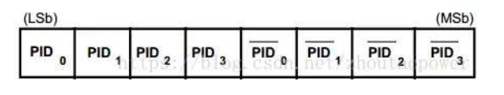
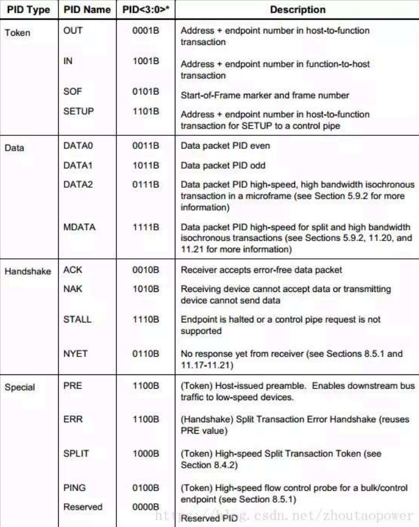
2.1 PID 域
包由域构成的，PID 将 USB 的包划分为了四种类型，分别是令牌包、数据包、握手包和特殊包，不同的包的域结构不同，介绍如下：
令牌包（Token）：可分为输入包、输出包、设置包和帧起始包（注意这里的输入包是用于设置输入命令的，输出包是用来设置输出命令的，而不是放数据的）
- 其中输入包（
IN）、输出包（OUT）和设置包（SETUP）的格式都是一样的：SYNC+PID+ADDR+ENDP+CRC5 - 帧起始包（
SOF）的格式：SYNC+PID+11位FRAM+CRC5 - 类型：
0x01：输出（OUT）启动一个方向为主机到设备的传输，并包含了设备地址和标号0x09：输入（IN）启动一个方向为设备到主机的传输，并包含了设备地址和标号0x05：帧起始（SOF）表示一个帧的开始，并且包含了相应的号，在每帧开始时以广播的形式发送，针对 USB 全速/高速设备，主机每 1ms/125us 产生一个帧（由Hos->Device），USB 主机会对当前帧号进行统计，每次帧开始时通过 SOF 包发送帧号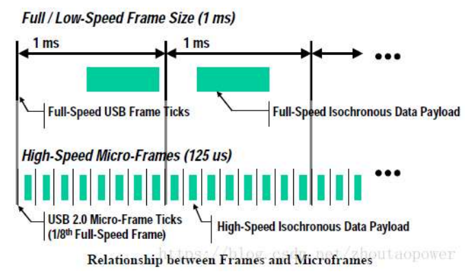0x0d：设置（SETUP）启动一个控制传输，用于主机对设备的初始化，与OUT令牌的区别是:只使用DATA0数据包，且只能发到Device的控制端点
- 其中输入包（
数据包（Data）：分为
DATA0包和DATA1包，当 USB 发送数据的时候，当一次发送的数据长度大于相应端点的容量时，就需要把数据包分为好几个包，A分批发送，DATA0包和DATA1包交替发送，即如果第一个数据包是DATA0，那第二个数据包就是DATA1。但也有例外情况，在同步传输中（四类传输类型中之一），所有的数据包都是为DATA0- 格式：
SYNC+PID+0~1023字节+CRC16 - 类型：
0x03：偶数据包（DATA0）0x0b：奇数据包（DATA1）0x07：高速设备的PID的同步包0x0f：高速设备分离包，高带宽的同步事务
- 格式：
握手包（HandShake）：结构最为简单的包
- 格式：
SYNC+PID - 类型
0x02:确认接收到无误的数据包（ACK）0x0a：无效（NAK），接收（发送）端正在忙而无法接收（发送）信息0x0e：错误（STALL)，端点被禁止或不支持控制管道请求0x06：无响应（NYET）
- 格式：
特殊类
- 前导包，错误包，分裂事务和 PING 测试
| PID | 数据传输方向 |
|---|---|
| IN | Device->Host |
| OUT | Host->Device |
| SETUP | Host->Device |
| PING | Device->Host |
2.2 Address 域
地址域有两部分组成：7bits 的设备地址 ADDR +4 bits 的端点地址 ENDP
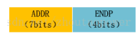
可以知道，USB 系统理论上最大支持链接 127 个设备，每个设备最多 $2^4=16$ 个端点。 实际上由于 INTER 硬件设计上的缺陷，根本达不到这么多。
这个 ENDP 只用在 IN/OUT/SETUP 令牌包中。
2.3 Frame Number 域
当 USB 令牌包的 PID 为 SOF 时候，其数据字段必须为 11 位的帧序列号。
帧号占11位，主机每发出一个帧，帧号都会自加1，当帧号达到0x7FF时，将归零重新开始计数。对于同步传输有重要意义。
2.4 Data 域
仅存在于 DATA 信息包，根据不同的传输类型，拥有不同大小的字节（0~1023字节）
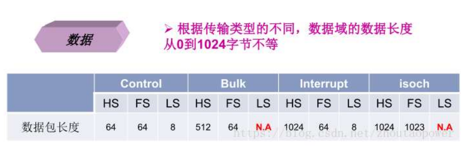
2.5 CRC 域
用于进行数据的 CRC 校验。
3、事务
在 USB 上数据信息的一次接收或发送的处理过程称为事务处理（Transaction）。一个事务由一系列包组成，具体由哪些包组成，它取决于具体的事务。
事务分别有 IN、OUT和 SETUP 三大事务，每一种事务都由令牌包、数据包、握手包三个阶段构成。
这里用阶段的意思是因为这些包的发送是有一定的时间先后顺序的
事务的三个阶段如下：
- 令牌包阶段：启动一个输入、输出或设置的事务
- 数据包阶段：按输入、输出发送相应的数据
- 握手包阶段：返回数据接收情况，在同步传输的
IN和OUT事务中没有这个阶段，这是比较特殊的。
事务的三种类型如下（以下按三个阶段来说明一个事务）：
SETUP事务：主机用来向设备发送控制命令- 令牌包阶段——主机发送一个
PID为SETUP的设置包给设备，通知设备要接收数据； - 数据包阶段——主机给设备发送数据，固定为 8 个字节的
DATA0包，这 8 个字节的内容就是标准的 USB 设备请求命令。 - 握手包阶段——设备–>主机，设备正确接收到主机的命令信息后，返回
ACK，此后总线进入空闲状态，并准备下一个传输（在SETUP事务后通常是一个IN或OUT事务构成的传输）
- 令牌包阶段——主机发送一个
整个过程为：
- 主机–>设备，
SYNC+SETUP+ADDR+ENDP+CRC5 - 主机–>设备，
SYNC+DATA0+8字节Data+CRC16 - 设备–>主机，
SYNC+ACK/NAK/STALL
IN事务：主机用来从设备读取数据- 令牌包阶段——主机发送一个
PID为IN的输入包给设备，通知设备要往主机发送数据； - 数据包阶段——设备根据情况会作出三种反应（要注意：数据包阶段也不总是传送数据的，根据传输情况还会提前进入握手包阶段）：
- 设备端点正常，设备往入主机里面发送数据（发送数据太长时拆分成多个
IN事务，DATA0与DATA1交替）； - 设备正在忙，无法往主机发出数据包就发送
NAK无效包，IN事务提前结束，到了下一个IN事务才继续； - 相应设备端点被禁止，发送错误包
STALL包，事务也就提前结束了，总线进入空闲状态
- 设备端点正常，设备往入主机里面发送数据（发送数据太长时拆分成多个
- 握手包阶段——主机正确接收到数据之后就会向设备发送
ACK包。
- 令牌包阶段——主机发送一个
整个过程为：
- 主机–>设备，
SYNC+IN+ADDR+ENDP+CRC5 - 设备–>主机，
SYNC+DATA1/0+(0~1023)字节Data+CRC16或SYNC+NAK/STALL（设备忙或设备出错） - 主机–>设备，
SYNC+ACK
OUT事务：主机用来向设备发送数据- 令牌包阶段——主机发送一个
PID为OUT的输出包给设备，通知设备要接收数据； - 数据包阶段——比较简单，就是主机给设备发送数据（发送数据太长时拆分成多个
IN事务，DATA0与DATA1交替）； - 握手包阶段——设备根据情况会作出三种反应：
- 设备端点接收正确，设备往入主机返回
ACK，通知主机可以发送新的数据，如果数据包发生了CRC校验错误，将不返回任何握手信息； - 设备正在忙，无法往主机发出数据包就发送
NAK无效包，通知主机再次发送数据； - 相应设备端点被禁止，发送错误包
STALL包，事务提前结束，总线直接进入空闲状态。
- 设备端点接收正确，设备往入主机返回
- 令牌包阶段——主机发送一个
整个过程为：
- 主机–>设备，
SYNC+OUT+ADDR+ENDP+CRC5 - 主机–>设备，
SYNC+DATA1/0+(0~1023)字节Data+CRC16 - 设备–>主机，
SYNC+ACK/NAK/STALL
4、传输
传输由 OUT、IN、SETUP 事务其中的事务构成，有四种类型：中断传输、批量传输、同步传输、控制传输，其中中断传输和批量转输的结构一样，同步传输有最简单的结构，而控制传输是最重要的也是最复杂的传输。
- 中断传输（Control Transfer）
- 批量传输（Bulk Transfer）
- 同步传输（Isochronous Transfer）
- 控制传输（Control Transfer）
4.1 控制传输
控制传输（Control Transfer）：最重要的也是最复杂的传输，控制传输由三个阶段构成（初始设置阶段、可选数据阶段、状态信息步骤），每一个阶段可以看成一个的传输，也就是说控制传输其实是由三个传输构成的，用来于 USB 设备初次加接到主机之后，主机通过控制传输来交换信息，设置地址和读取设备的描述符，使得主机识别设备，并安装相应的驱动程序，这是每一个 USB 开发者都要关心的问题。
建立阶段（Setup）：主机从 USB 设备获取配置信息，并设置设备的配置值。建立阶段的数据交换包含了
SETUP令牌封包、紧随其后的DATA0数据封包以及ACK握手封包。它的作用是执行一个设置（概念含糊）的数据交换，并定义此控制传输的内容也就是说，在
Data Stage中IN或OUT的data包个数，及发送方向，在Setup阶段已经被设定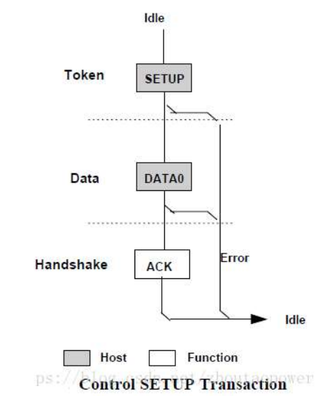
数据阶段（Data）：就是一个由
IN或OUT事务构成的传输，这个步骤是可选的，要看初始设置步骤有没有要求读/写数据（由SET事务的数据包步骤发送的标准请求命令决定）。根据数据阶段的数据传输的方向，控制传输又可分为 3 种类型控制读取（读取 USB 描述符）：将数据从设备读到主机上，读取的数据是 USB 设备描述符。每个数据信息包而言，首先，主机会发送一个
IN令牌信息包，表示要读数据进来。然后，设备将数据通过DATA1/DATA0数据信息包回传给主机。最后，主机将以下列的方式加以响应：当数据已经正确接收时，主机送出ACK令牌信息包；当主机正在忙碌时，发出NAK握手信息包；当发生了错误时，主机发出STALL握手信息包控制写入（配置 USB 设备）：将数据从主机传到设备上，所传的数据为对 USB 设备的配置信息，对每一个数据信息包而言，主机将会送出一个
OUT令牌信息包，表示数据要送出去。紧接着，主机将数据通过DATA1/DATA0数据信息包传递至设备。最后，设备将以下列方式加以响应：当数据已经正确接收时，设备送出ACK令牌信息包；当设备正在忙碌时，设备发出NAK握手信息包；当发生了错误时，设备发出STALL握手信息包无数据控制
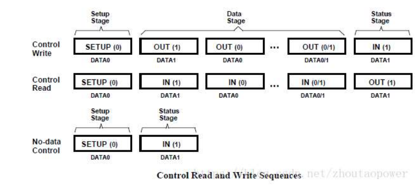
状态信息（Staus）：用来表示整个传输的过程已经完全结束，由
IN或OUT事务构成构成的传输，但是要注意这里的IN和OUT事务和之前的IN和OUT事务有两点不同：- 传输方向相反，通常
IN表示设备往主机送数据，OUT表示主机往设备送数据；在这里，IN表示主机往设备送数据，而OUT表示设备往主机送数据，这是为了和可选数据步骤相结合； - 在这个步骤，数据包阶段的数据包都是 0 长度的
DATA1包，即SYNC+PID+CRC16
- 传输方向相反，通常
控制输入时：
- 初始设置步骤：
- 主机–>设备，
SYNC+SETUP+ADDR+ENDP+CRC5 - 主机–>设备，
SYNC+DATA0+8字节+CRC16 - 设备–>主机，
SYNC+ACK/NAK/STALL
- 主机–>设备，
- 可选数据步骤：（数据较多时，此步骤可以分多次，此时
DATA0/DATA1交替传送）- 主机–>设备，
SYNC+IN+ADDR+ENDP+CRC5 - 设备–>主机，
SYNC+DATA1+n字节+CRC16或SYNC+NAK/STALL - 主机–>设备，
SYNC+ACK
- 主机–>设备，
- 状态信息步骤：
- 主机–>设备，
SYNC+OUT+ADDR+ENDP+CRC5 - 主机–>设备，
SYNC+DATA1+0字节+CRC16 - 设备–>主机，
SYNC+ACK/NAK/STALL
- 主机–>设备，
控制输出时：
- 初始设置步骤：
- 主机–>设备，
SYNC+SETUP+ADDR+ENDP+CRC5 - 主机–>设备，
SYNC+DATA0+8字节+CRC16 - 设备–>主机，
SYNC+ACK/NAK/STALL
- 主机–>设备，
- 可选数据步骤：（数据较多时，此步骤可以分多次，此时
DATA0/DATA1交替传送）- 主机–>设备，
SYNC+OUT+ADDR+ENDP+CRC5 - 主机–>设备，
SYNC+DATA1+n字节+CRC16 - 设备–>主机，
SYNC+ACK/NAK/STALL
- 主机–>设备，
- 状态信息步骤：
- 主机–>设备，
SYNC+IN+ADDR+ENDP+CRC5 - 设备–>主机，
SYNC+DATA1+0字节+CRC16或SYNC+NAK/STALL - 主机–>设备，
SYNC+ACK
- 主机–>设备，
4.2 批量传输
批量传输（Bulk Transfer）：由 OUT 事务和 IN 事务构成，用于==大容量数据传输==，没有固定的传输速率，也不占用带宽，适用于打印机、存储设备等。当总线忙时，USB 会优先进行其他类型的数据传输，而暂时停止批量转输。
批量传输是可靠的传输，需要握手包来表明传输的结果。若数据量比较大，将采用多次批量事务传输来完成全部数据的传输，传输过程中数据包的 PID 按照 DATA0-DATA1-DATA0-.. 的方式翻转，以保证发送端和接收端的同步。
一次批量传输（Transfer）由 1 次到多次批量事务传输（Transaction）组成。
重传机制：
- USB 允许连续 3 次以下的传输错误，会重试该传输，若成功则将错误次数计数器清零，否则累加该计数器。超过三次后，HOST 认为该端点功能错误（
STALL），会放弃该端点的传输任务 - 发送端按照
DATA0-DATA1-DATA0-..的顺序发送数据包，只有成功的事务传输才会导致PID翻转，也就是说发送端只有在接收到ACK后才会翻转PID，发送下一个数据包，否则会重试本次事务传输。同样，若在接收端发现接收到到的数据包不是按照此顺序翻转的，比如连续收到两个DATA0，那么接收端认为第二个DATA0是前一个DATA0的重传
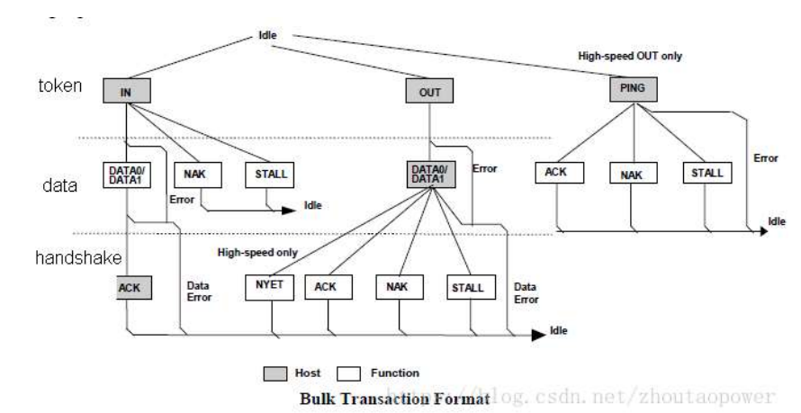
4.3 中断传输
中断传输（Control Transfer）：由 OUT 事务和 IN 事务构成，用于键盘、鼠标等 HID 设备的数据传输中
中断传输在流程上除不支持 PING 之外，其他的跟批量传输是一样的。他们之间的区别也仅在于事务传输发生的端点不一样、支持的最大包长度不一样、优先级不一样等这样一些对用户来说透明的东西。主机在排定中断传输任务时，会根据对应中断端点描述符中指定的查询间隔发起中断传输。中断传输有较高的优先级，仅次于同步传输。
同样中断传输也采用 PID 翻转的机制来保证收发端数据同步。下图为中断传输的流程图。
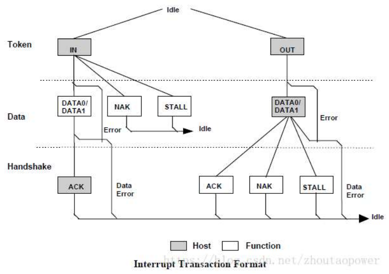
4.4 同步传输
同步传输（Isochronous Transfer）：由 OUT 事务和 IN 事务构成，有两个特殊地方：
- 第一，在同步传输的
IN和OUT事务中是没有握手包阶段的； - 第二，在数据包阶段所有的数据包都为
DATA0
同步传输不支持 handshake 和重传，所以它是==不可靠传输==。
四、USB 请求
标准的 USB 设备请求命令是用在控制传输中的“初始设置步骤”里的数据包阶段（即DATA0，由八个字节构成）。
标准 USB 设备请求命令共有 11 个，大小都是 8 个字节，具有相同的结构，由 5 个字段构成（字段是标准请求命令的数据部分），结构如下（括号中的数字表示字节数，首字母bm、b、w 分别表示位图、字节，双字节）：
bmRequestType(1)+bRequest(1)+wvalue(2)+wIndex(2)+wLength(2)
各字段的意义如下：
bmRequestType：表示位图- D7：第二阶段数据传输方向
- 0：主机至设备
- 1：设备至主机
- D6D5：种类
- 00：标准请求命令
- 01：类请求命令
- 10：用户定义的命令
- 11：保留
- D4D3D2D1D0：接收者
- 0：接收者为设备
- 1： 接收者为接口
- 2： 接收者为端点
- 3： 接收者为其他接收者
- 4…31：保留
- D7：第二阶段数据传输方向
bRequest：命令类型编码值，见下表
| bRequest | Value | |
|---|---|---|
GET_STATUS |
0 | 用来返回特定接收者的状态 |
CLEAR_FEATURE |
1 | 用来清除或禁止接收者的某些特性 |
| 为将来保留 | 2 | |
SET_FEATURE |
3 | 用来启用或激活命令接收者的某些特性 |
| 为将来保留 | 4 | |
SET_ADDRESS |
5 | 用来给设备分配地址 |
GET_DEscriptOR |
6 | 用于主机获取设备的特定描述符 |
SET_DEscriptOR |
7 | 修改设备中有关的描述符，或者增加新的描述符 |
GET_CONFIGURATION |
8 | 用于主机获取设备当前设备的配置值（注同上面的不同） |
SET_CONFIGURATION |
9 | 用于主机指示设备采用的要求的配置 |
GET_INTERFACE |
10 | 用于获取当前某个接口描述符编号 |
SET_INTERFACE |
11 | 用于主机要求设备用某个描述符来描述接口 |
SYNCH_FRAME |
12 | 用于设备设置和报告一个端点的同步帧 |
wValue：表示要获取描述符的类型（高字节位描述符索引，低字节为描述符索引）- 1 - 设备描述符
- 2 - 配置描述符
- 3 - 字符描述符
- 4 - 接口描述符
- 5 - 端口描述符
wIndex：根据不同的命令，含义也不同，主要用于传送索引或偏移wLength：如有数据传送阶段，此为数据字节数
五、USB 描述符
USB 协议为 USB 设备定义了一套描述设备功能和属性的有固定结构的描述符。USB 设备通过这些描述符向 USB 主机汇报设备的各种各样属性，主机通过对这些描述符的访问对设备进行类型识别、配置并为其提供相应的客户端驱动程序。
USB 设备通过描述符反映自己的设备特性。USB描述符是由特定格式排列的一组数据结构组成。
在 USB 设备枚举过程中，主机端的协议软件需要解析从 USB 设备读取的所有描述符信息。在 USB 主向设备发送读取描述符的请求后，USB 设备将所有的描述符以连续的数据流方式传输给 USB 主机。主机从第一个读到的字符开始，根据双方规定好的数据格式，顺序地解析读到的数据流。
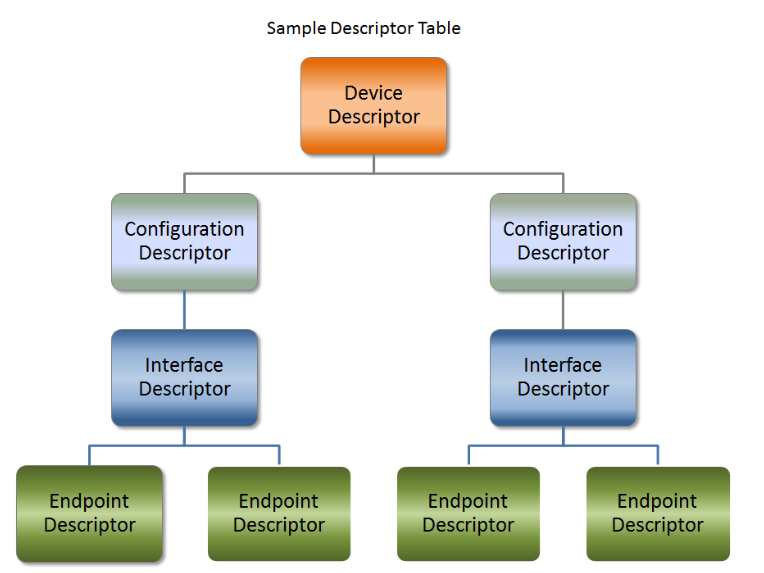
下面主要介绍以下几种描述符：
- 设备描述符（Device Descriptor）
- 配置描述符（Configuration Descriptor）
- 接口描述符（Interface Descriptor）
- 端点描述符（Endpoint Descriptor）
- 设备限定描述符（Device Qualifier Descriptor）
- 字符串描述符（String Descriptor）
所有 USB 描述符都由一种通用格式组成。第一个字节指定描述符的长度，而第二个字节表示描述符类型。如果描述符的长度小于规范定义的长度，那么主机将忽略它。但是，如果大小大于预期，主机将忽略额外的字节，并在返回的实际长度结束时开始寻找下一个描述符。
1 | |
1、设备描述符
USB 设备描述符是 USB设备在进行插拔和初始化过程中，最先被主机读取的一部分信息，它包含了设备的一些基本属性信息，如 USB 规范版本、设备类、设备子类、设备协议、最大数据包长度等。
USB 设备描述符通常是在设备插入时被主机读取，在获取到设备描述符后，主机可以自动加载相应的驱动程序，完成设备的初始化和配置。
设备描述符是 USB 设备的第一个描述符，每个 USB 设备都得具有设备描述符，且只能拥有一个。
windows 系统中设描描述符的结构体定义如下：
1 | |
补充说明
bDescriptorType 为描述符的类型，其含义可查下表（也适用于标准命令 Get_Descriptor 中 wValue 域高字节的取值含义：
| 类型 | 描述符 | 描述符值 |
|---|---|---|
| 标准描述符 | 设备描述符（Device Descriptor） | 0x01 |
| 配置描述符（Configuration Descriptor） | 0x02 | |
| 字符串描述符（String Descriptor） | 0x03 | |
| 接口描述符（Interface Descriptor） | 0x04 | |
| 端点描述符（Endpoint Descriptor） | 0x05 | |
| 类描述符 | 人机接口类描述符（HID） | 0x21 |
| 集线器类描述符（Hub Descriptor） | 0x29 | |
| 厂商定义的描述符 | 0xFF |
设备类代码 bDeviceClass 可查下表：
| 值（十进制） | 值（十六进制） | 说明 |
|---|---|---|
| 0 | 0x00 | 接口描述符中提供类的值 |
| 2 | 0x02 | 通信类 |
| 9 | 0x09 | 集线器类 |
| 220 | 0xDC | 用于诊断用途的设备类 |
| 224 | 0xE0 | 无线通信设备类 |
| 255 | 0xFF | 厂商定义的设备类 |
2、配置描述符
配置描述符定义了设备的配置信息，一个设备可以有多个配置描述符。不过大部分的 USB 设备只有一个配置描这符。
配置描述符指定设备的供电方式、最大功耗是多少、它拥有的接口数量。因此，可以有两种配置，一种用于设备由总线供电时，另一种用于设备供电时。由于这是接口描述符的“头”，因此使一种配置使用与另一种配置不同的传输模式也是可行的。
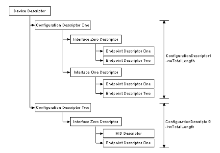
一旦主机检查了所有配置，主机将发送具有非零值的 SetConfiguration 命令，该值与其中一个配置的bConfigurationValue 匹配。这用于选择所需的配置。
USB 配置描述符的结构如下：
1 | |
3、接口描述符
接口描述符一般是按设备的运行状态分类，这样设备可以在不同的接口中切换来实现设备运行状态的切换，如在设备在运行状态下使用正常的接口描述符，在停止状态下使用该接口描述符的备用接口描述符。
配置描述符中包含了一个或多个接口描述符，这里的“接口”并不是指物理存在的接口，在这里把它称之为“功能”更易理解些，例如一个设备既有录音的功能又有扬声器的功能，则这个设备至少就有两个“接口”。
如果一个配置描述符不止支持一个接口描述符，并且每个接口描述符都有一个或多个端点描述符，那么在响应 USB 主机的配置描述符命令时，USB 设备的端点描述符总是紧跟着相关的接口描述符后面，作为配置描述符的一部分被返回。接口描述符不可直接用 Set_Descriptor 和 Get_Descriptor 来存取。
如果一个接口仅使用端点 0，则接口描述符以后就不再返回端点描述符，并且此接口表现的是一个控制接口的特性，它使用与端点 0 相关联的默认管道进行数据传输。在这种情况下bNumberEndpoints 域应被设置成 0 接口描述符在说明端点个数并不把端点 0 计算在内。
USB 接口描述符的结构如下：
1 | |
补充说明
bInterfaceClass 字段表示接口所属的类别，其类型如下表：
| 值（十六进制） | 类别 |
|---|---|
| 0x01 | 音频类 |
| 0x02 | CDC控制类 |
| 0x03 | 人机接口类（HID） |
| 0x05 | 物理类 |
| 0x06 | 图像类 |
| 0x07 | 打印机类 |
| 0x08 | 大数据存储类 |
| 0x09 | 集线器类 |
| 0x0A | CDC数据类 |
| 0x0B | 智能卡类 |
| 0x0D | 安全类 |
| 0xDC | 诊断设备类 |
| 0xE0 | 无线控制器类 |
| 0xFE | 特定应用类（包括红外的桥接器等） |
| 0xFF | 厂商定义的设备 |
4、接口关联描述符
对于复合USB设备的接口描述符，可以在每个类（Class）要合并的接口描述符之前加一个接口关联描述符（Interface Association Descriptor，IAD),其作用就是把多个接口定义成一个类设备，即多个接口作用于一个设备。
接口关联描述符的定义如下：
1 | |
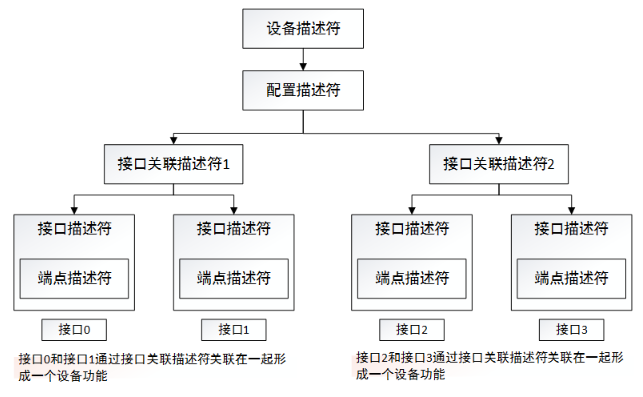
5、端点描述符
端点是设备与主机之间进行数据传输的逻辑接口，除配置使用的端点 0（控制端点，一般一个设备只有一个控制端点）为双向端口外，其它均为单向。端点描述符描述了数据的传输类型、传输方向、数据包大小和端点号（也可称为端点地址）等。
除了描述符中描述的端点外，每个设备必须要有一个默认的控制型端点，地址为 0，它的数据传输为双向，而且没有专门的描述符，只是在设备描述符中定义了它的最大包长度。主机通过此端点向设备发送命令，获得设备的各种描述符的信息，并通过它来配置设备。
1 | |
bmAttributes：端点属性Bit7-2，保留（同步有定义）
BIt1-0：00-控制，01-同步，02-批量，03-中断
当为同步传输时：
bEndpointType的 bit3-2 的值不同代表的含义不同：- 00：无同步
- 01：异步
- 10：适配
- 11：同步
- BIT5:4
- 00: 表示数据端点
- 01：表示反馈端点 Feedback endpoint
- 10：表示隐式反馈数据端点 Implicit feedback Data endpoint
- 11:保留
wMaxPacketSize: 本端点接收或发送的最大信息包大小．- USB2.0时：
对于同步端点，此值用于指示主机在调度中保留的总线时间，这是每（微）帧数据有效负载所需的时间，有效负载时间就是发送一帧数据需要占用的总线时间，在实际数据传输过程中，管道实际使用的带宽可能比保留的带宽少；如果实际使用的带宽比保留的还多，那就丢数了；
对于其类型的端点：- bit10~bit0：指定最大数据包大小（以字节为单位）；
- bit12~bit11：对于高速传输的同步和中断端点有效：
- bit12~bit11 可指定每个微帧的额外通信次数，这里是在高速传输中，当一个事务超时时，在一个微帧时间内重传的次数。如果设置为 00b（None），则表示在一个微帧内只传输一个事务，不进行额外的超时重传；如果设置为 01b，则表示在一个微帧内可以传输两次事务，有一次额外的重传机会
- 一个微帧最多可以有两次重传事务的机会，如果微帧结束了还是失败，就需要等到下一个微帧继续发送该事务
- USB3.0 时：
wMaxPacketSize表示包的大小。对于 bulk 为 1024，而对于同步传输，可以为 0~1024 或 1024。
bInterval：轮询数据传送端点的时间间隔，对于批量传送和控制传送的端点忽略；对于同步传送的端点，必须为 1；对于中断传送的端点，范围为 1-255．- 对于全速/高速同步端点，此值必须在 1 到 16 之间。
bInterval值用作 2 的指数，例如bInterval为 4，表示周期为 8 个单位； - 对于全速/低速中断端点，该字段的值可以是 1 到 255，也就是主机多少 ms 给设备发一次数据请求；
- 对于高速中断端点，使用
bInterval值作为 2 的指数，例如bInterval为 4 表示周期为 8。这个值必须在 1 到 16 之间； - 对于高速批量/控制输出端点，
bInterval必须指定端点的最大 NAK 速率。值 0 表示端点永不 NAK。其它值表示每个微帧的bInterval*125us时间最多 1 个 NAK。这个值的范围必须在 0 到 255 之间；- 00 = None (1 transaction per microframe)
- 01 = 1 additional (2 per microframe)
- 10 = 2 additional (3 per microframe)
- 11 = Reserved
- 其它位默认为0
- 对于全速/低速批量/控制输出端点，此值无意义，可以任意指定。
- 对于全速/高速同步端点，此值必须在 1 到 16 之间。
6、设备限定描述符
设备限定描述符描述符用在当一个设备能够工作在不同的速度下时，会获取设备限定描述符。
同时支持全速与高速的设备，必须有一个 Device Qualifier Descriptor。当设备转换速度的时候，设备描述符中的某些字段可能改变。Device Qualifier Descriptor 描述符储存当前不适用的速度的字段数值。设备描述符与 device_qualifier 描述符中的字段数值，视所选择的速度来做交替。
比如有一个高速的设备和一个全速的设备，他们的 VID、 PID 以及设备版本号都一样，先接入高速的设备，系统会“记住”他的速度是高速的。拔掉后再接入一个全速的设备，由于他们的标识都一样，系统会认为这是个相同的设备工作在不同的速度下，会请求设备限定描述符。 这里其实虽然用了两个不同速度的设备来举例，但是在主机端看来，这和一个设备工作在两种速率是一样的。 反过来如果先接入全速再接入高速，也会这样。
USB 设备不一定会支持设备限定描述符，所以如果 USB 主机获取设备限定描述符，USB 设备回复 STALL 表示设备不支持该描述符。这种控制传输的失败并不影响设备的正常枚举和使用。
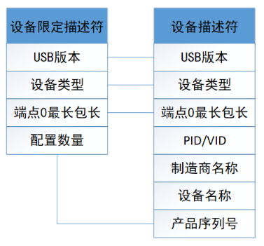
设备限定描述符由 9 个字段组成，长度固定为 10 个字节：
| 位移 | 字段名称 | 长度（字节） | 字段值 | 意义 |
|---|---|---|---|---|
| 0 | bLength | 1 | 0x0A | 描述符大小（字节） |
| 1 | bDescriptorType | 1 | 0x06 | 描述符类型编号 |
| 2 | bcdUSB | 2 | BCD | USB规范版本号(例如, 0200h V2.00) |
| 4 | bDeviceClass | 1 | 类别 | 类别码 |
| 5 | bDeviceSubclass | 1 | 子类别 | 子类别码 |
| 6 | bDeviceProtocol | 1 | 协议 | 协议码 |
| 7 | bMaxPacketSize(0) | 1 | 数字 | 最大数据包大小 |
| 8 | bNumConfigurations | 1 | 数字 | 可能配置的数目 |
| 9 | Reserved | 1 | 0 | 保留 |
7、字符串描述符
字符串描述符是可选的，描述了如制商、设备名称或序列号等信息。如果不支持字符串描述符，其设备描述符、配置描述符、接口描述符内的所有字符串描述符索引都必须为 0。字符串使用的是Unicode 编码。
在设备描述符中的
iManufacturer、iProduct、iSerialNumber就代表的字符串描述符的 Index
主机请示得到某个字符串描述符时一般分为两步：
- 首先主机向设备发出 USB 标准命令
Ge_ Descriptor，其中所使用的字符串的索引值为 0 这个 USB 的GET_DESCRIPTOR请求的字段填充方式如下：
1 | |
设备返回一个字符串描述符，此描述符的结构如下：
| 偏移量 | 域 | 大小 | 值 | 描述 |
|---|---|---|---|---|
| 0 | bLength | 1 | N+2 | 此描述表的字节数 |
| 1 | bDescriptorType | 1 | 常量 | 字符串描述表类型（此处应为0x03） |
| 2 | wLANGID[0] | 2 | 数字 | 语言标识码0（LANGID） |
| … | … | … | … | … |
| N | wLANGID[x] | 数字 | 语言标识 | 语言标识码 X（LANGID） |
- 主机根据自己需要的语言，再次向设备发出 USB 标准命令
Get_Descriptor，指明所要求得到的字符串的索引值和语言。
这个 USB 的 GET_DESCRIPTOR 请求的字段填充方式如下：
1 | |
这里的 index 就是前面说的 iManufacturer、iProduct、iSerialNumber 的值，也就是说，你想获取这三个中的哪个字符串描述，就放哪个对应的 index 进去，比如：
1 | |
我想获得 Product 的字符串描述，我就这样配置我的请求：
1 | |
这次设备所返回的是 Unicode 编号的字符串描述符，其结构如下：
| 偏移量 | 域 | 大小 | 值 | 描述 |
|---|---|---|---|---|
| 0 | bLength | 1 | 数字 | 此描述符表的字节数（bString 域的数值 N+2） |
| 1 | bDescriptorType | 1 | 常量 | 字符串描述表类型（此处应为 0x03） |
| 2 | bString | N | 数字 | Unicode 编码的字符串 |
bString域为设备实际返回的以UNICODE编码的字符串流，我们在编写设备端硬件驱动的时候需要字符串转换为UNICODE编码，您可以通过一些UNICODE转换工具进行转换
六、USB 枚举
当 USB 设备插上主机时，主机就通过一系列的动作来对设备进行枚举配置（配置是属于枚举的一个态，态表示暂时的状态），这这些态如下：
- 接入态（
Attached）：全/高速设备 D+ 引脚外接 1.5k 上拉电阻，低速设备 D- 引脚外接 1.5k 上拉电阻，设备接入主机后，主机通过检测信号线上的电平变化来发现设备的接入，并获取设备速度； - 供电态（
Powered）：就是给设备供电，分为设备接入时的默认供电值，配置阶段后的供电值（按数据中要求的最大值，可通过编程设置） - 缺省态（
Default）：USB 在被配置之前，通过缺省地址 0 与主机进行通信； - 地址态（
Address）：经过了配置，USB 设备被复位后，就可以按主机分配给它的唯一地址来与主机通信，这种状态就是地址态； - 配置态（
Configured）：通过各种标准的 USB 请求命令来获取设备的各种信息，并对设备的某此信息进行改变或设置。 - 挂起态（
Suspended）：总线供电设备在 3ms 内没有总线动作，即 USB 总线处于空闲状态的话，该设备就要自动进入挂起状态，在进入挂起状态后，总的电流功耗不超过 280UA。
下面介绍 Windows 下 USB 设备的枚举：
- 用户把 USB 设备插入 USB 端口或给系统启动时设备上电
这里的 USB 端口指的是主机下的根 Hub 或主机下行端口上的 Hub 端口。Hub 给端口供电，连接着的设备处于上电状态。
- Hub 监测它各个端口数据线上（D+/D-）的电压
在 Hub 端，数据线 D+ 和 D- 都有一个阻值在 14.25k 到 24.8k 的下拉电阻 Rpd，而在设备端，D+（全速，高速）和 D-（低速）上有一个 1.5k 的上拉电阻 Rpu。当设备插入到 Hub 端口时，有上拉电阻的一根数据线被拉高到幅值的 90% 的电压（大致是 3V）。Hub 检测到它的一根数据线是高电平，就认为是有设备插入，并能根据是 D+ 还是 D- 被拉高来判断到底是什么设备（全速/低速）插入端口。
- Host 了解连接的设备
每个 Hub 利用它自己的中断端点向主机报告它的各个端口的状态（对于这个过程，设备是看不到的，也不必关心），报告的内容只是 Hub 端口的设备连接／断开的事件。如果有连接／断开事件发生，那么 Host 会发送一个 Get_Port_Status 请求（request）以了解更多 Hub 上的信息。Get_Port_Status 等请求属于所有 Hub 都要求支持的 Hub 类标准请求。
- Hub 检测所插入的设备是高速还是低速设备
Hub 通过检测 USB 总线空闲（Idle）时差分线的高低电压来判断所连接设备的速度类型，当 Host 发来 Get_Port_Status 请求时，Hub 就可以将此设备的速度类型信息回复给 Host（USB 2.0 规范要求速度检测要先于复位（Reset）操作）。
- Hub 复位设备
当主机获悉一个新的设备后，主机控制器就向 Hub 发出一个Set_Port_Feature 请求让 Hub 复位其管理的端口。Hub 通过驱动数据线到复位状态（D+ 和 D- 全为低电平），并持续至少 10ms。当然，Hub 不会把这样的复位信号发送给其他已有设备连接的端口，所以其他连在该Hub 上的设备自然看不到复位信号，不受影响。
- Host 检测所连接的全速设备是否是支持高速模式
因为根据 USB 2.0 协议，高速设备在初始时是默认全速状态运行，所以对于一个支持 USB 2.0 的高速 Hub，当它发现它的端口连接的是一个全速设备时，会进行高速检测，看看目前这个设备是否还支持高速传输，如果是，那就切到高速信号模式，否则就一直在全速状态下工作。
同样的，从设备的角度来看，如果是一个高速设备，在刚连接 Hub 或上电时只能用全速信号模式运行（根据 USB 2.0 协议，高速设备必须向下兼容 USB 1.1 的全速模式）。随后 Hub 会进行高速检测，之后这个设备才会切换到高速模式下工作。假如所连接的 Hub 不支持 USB 2.0，即不是高速 Hub，不能进行高速检测，设备将一直以全速工作。
- Hub 建立设备和主机之间的信息通道
主机不停得向 Hub 发送 Get_Port_Status 请求，以查询设备是否复位成功。Hub 返回的报告信息中有专门的一位用来标志设备的复位状态。
当 Hub 撤销了复位信号，设备就处于默认／空闲状态，准备着主机发来的请求。设备和主机之间的通信通过控制传输，默认地址 0，端点号 0 进行。在此时，设备能从总线上得到的最大电流是 100mA。
- 主机发送
Get_Descriptor请求获取默认管道的最大包长度
默认管道在设备一端来看就是端点 0。主机此时发送的请求是默认地址 0，端点 0，虽然所有位分配地址的设备都是通过地址 0 来获取主机发来的信息，但由于枚举过程不是多个设备并行处理，而是一次枚举一个设备的方式进行，所以不会发生多个设备同时响应主机发来的请求。
设备描述符的第 8 字节代表设备端点0的最大包大小。对于 Windows 系统来说，Get_Descriptor 请求中的 wLength 一项都会设为 64， 虽然说设备所返回的设备描述符长度只有 18 字节，但系统也不在乎，此时，描述符的长度信息对它来说是最重要的，其他的瞄一眼就过了。Windows系统还有个怪癖，当完成第一次的控制传输后，也就是完成控制传输的状态阶段，系统会要求 Hub 对设备进行再一次的复位操作（USB 规范里面可没这要求）。再次复位的目的是使设备进入一个确定的状态。
- 主机给设备分配一个地址
主机控制器通过 Set_Address 请求向设备分配一个唯一的地址。在完成这次传输之后，设备进入地址状态，之后就启用新地址继续与主机通信。这个地址对于设备来说是终身制的，设备在，地址在；设备消失（被拔出，复位，系统重启），地址被收回。同一个设备当再次被枚举后得到的地址不一定是上次那个了。
- 主机获取设备的信息
主机发送 Get_Descriptor 请求到新地址读取设备描述符，这次主机发送 Get_Descriptor 请求可算是诚心，它会认真解析设备描述符的内容。设备描述符内信息包括端点 0 的最大包长度，设备所支持的配置个数，设备类型，VID（Vendor ID，由 USB-IF 分配）， PID（Product ID，由厂商自己定制）等信息。
之后主机发送 Get_Descriptor 请求，读取配置描述符，字符串等，逐一了解设备更详细的信息。事实上，对于配置描述符的标准请求中，有时wLength 一项会大于实际配置描述符的长度（9 字节），比如 255。这样的效果便是：主机发送了一个 Get_Descriptor_Configuration 的请求，设备会把接口描述符，端点描述符等后续描述符一并回给主机，主机则根据描述符头部的标志判断送上来的具体是何种描述符。
主机通过解析描述符后对设备有了足够的了解，会选择一个最合适的驱动给设备。在驱动的选择过程中，Windows 系统会和系统 INF 文件里的厂商 ID，产品 ID，有时甚至用到设备返回来的产品版本号进行匹配。如果没有匹配的选项，Windows 会根据设备返回来的类，子类，协议值信息选择。如果该设备以前在系统上成功枚举过，操作系统会根据以前记录的登记信息而非 INF 文件挂载驱动。当操作系统给设备指定了驱动之后，就由驱动来负责对设备的访问。
对于复合设备，通常应该是不同的接口配置给不同的驱动，因此，需要等到当设备被配置并把接口使能后才可以把驱动挂载上去。
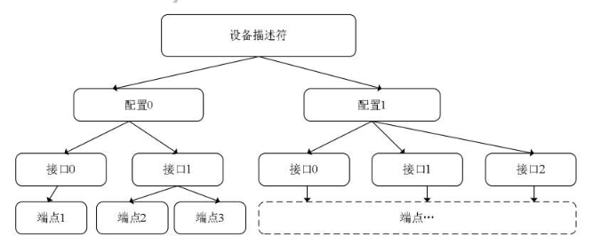
实际情况没有上述关系复杂。一般来说，一个设备就一个配置，一个接口，如果设备是多功能符合设备，则有多个接口。端点一般都有好几个，比如 Mass Storage 设备一般就有两个端点（控制端点 0 除外）。
驱动（注意，这里是驱动，之后的事情都是有驱动来接管负责与设备的通信）根据前面设备回复的信息，发送 Set_Configuration 请求来正式确定选择设备的哪个配置作为工作配置（对于大多数设备来说，一般只有一个配置被定义）。至此，设备处于配置状态，当然，设备也应该使能它的各个接口。
对于复合设备，主机会在这个时候根据设备接口信息，给它们挂载驱动。